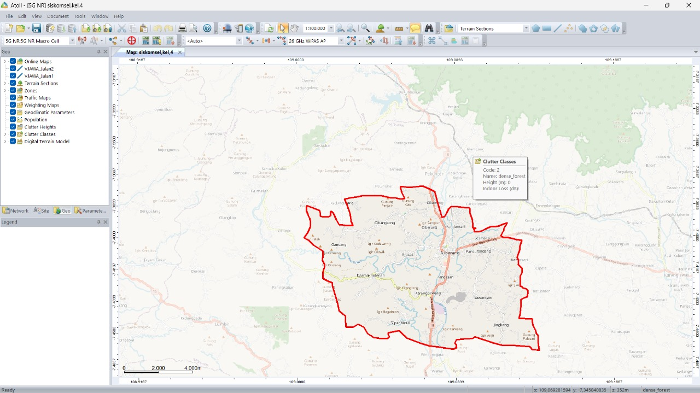

RF Planning Simulation 01 // COURSEWORK PROJECT5G NR Network Planning Using Atoll
Radio network simulation and coverage/capacity analysis for 5G New Radio deployment.
Atoll
3500 MHz
Coverage Planning